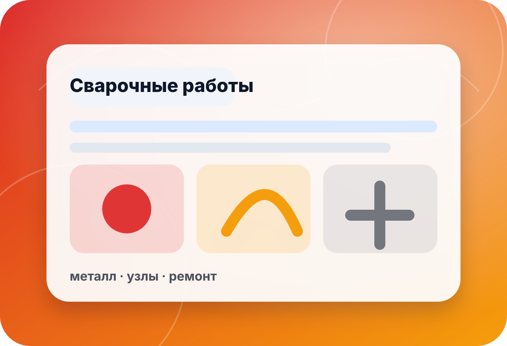

услуга · сварочные работы
Сварочные работы для оснастки, рам и производственных задач
Поможем структурировать запрос на сварочные работы: назначение конструкции, материал, габариты, нагрузки, точность и дальнейшее применение. В preview не обещаем стоимость, сроки и технологию без ТЗ и осмотра вводных.
- ТЗ
- чертёж
- материал
- металл
- габарит
- размер
- нагрузка
- режим

сценарии
Для чего нужна сварка?
Чем точнее цель конструкции, тем проще подобрать маршрут работ, подготовку и контроль результата.
Сварка по готовому ТЗКогда есть чертёж, размеры, материал и понятные требования к изделию.Смотреть услугу →
Оснастка или рамаДля мастерской, оборудования, прототипа или производственного процесса.Описать задачу →
Нужно подготовить модельЕсли нет чертежа, начните с замеров, 3D-модели или реверсивного инжиниринга.Подготовить ТЗ →
процесс
Что согласовать до работ
Страница собирает вводные для безопасной оценки. Производственные обещания возможны только после уточнения задачи.
▣ ✦
✦ ⬢
⬢
Назначение конструкции
Рама, кронштейн, корпус, ремонт или оснастка требуют разных требований к прочности.
- где используется
- нагрузка
- среда
Материал и заготовки
Важно понимать марку/тип металла, толщину, состояние заготовок и доступность деталей.
- металл
- толщина
- подготовка
Габариты и доступ
Размеры изделия, место работ и доступ к швам влияют на маршрут и оснастку.
- размер
- доступ
- транспортировка
✦Требования к шву
Нагрузка, внешний вид, герметичность и последующая обработка обсуждаются заранее.
- прочность
- вид
- контроль
⬢Прототипирование
Иногда перед металлом полезно проверить геометрию на макете или шаблоне.
- макет
- посадки
- проверка
B2B-запрос
Для юрлиц подготовьте реквизиты, ТЗ, требования к документам и контакт инженера.
- реквизиты
- ТЗ
- документы
чек-лист
Что приложить к запросу
Чертёж или эскиз
Даже простой эскиз с размерами лучше, чем описание словами.
Указать:габариты · отверстия · допуски · количествоМатериал
Тип металла, толщина, заготовки и требования к поверхности важны для оценки.
Указать:сталь · алюминий · толщина · покрытиеНагрузка
Статическая, вибрационная или ударная нагрузка меняет требования к конструкции.
Указать:вес · усилие · вибрация · безопасностьФиниш
Зачистка, покраска, точность внешнего вида и сборка согласуются отдельно.
Указать:зачистка · окраска · вид · сборкамини-бриф
Опишите сварочную задачу
Форма в preview не отправляет данные на сервер. Для реального запуска подключается CRM/почта/мессенджер после согласования.